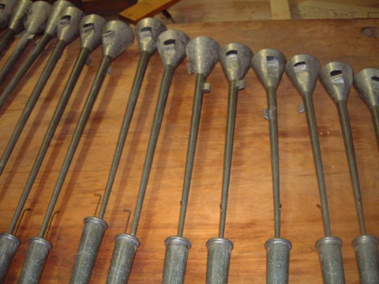

These are photographs of the 8' Heckelphone from Mt. Holyoke College, Massachusetts, USA by E. M. Skinner, 1922. They are reproduced here by courtesy of William Baker. Compare the form of the resonators with those of the Heckelphone at Woolsey Hall.

|
Original website compiled by Edward L. Stauff. For educational use only. MH_Heckelphone.html - Last updated 14 March 2002. |
Home Full Index |